赛事运营 · 模拟赛车社区
85天，我办了一场85人参与的比赛
从一个一闪而过的念头，到一场持续运营的模拟赛车赛事：规则、宣发、转播、判罚、服务器搭建和社区运营，全部从零开始跑通。
在几个月前，办一个赛车比赛只是我脑海中一闪而过的想法。现在，我基于拟真向硬核的赛车模拟器《神力科莎：争锋》（Assetto Corsa Competizione），办了一个模拟赛车比赛，至今举行了 19 场比赛，达到 400+ 参赛人次，总花费不过两百元。而 ACC 夏日挑战赛已然成为了圈内颇有名气的比赛，甚至被莱仕达官方赛事借鉴。
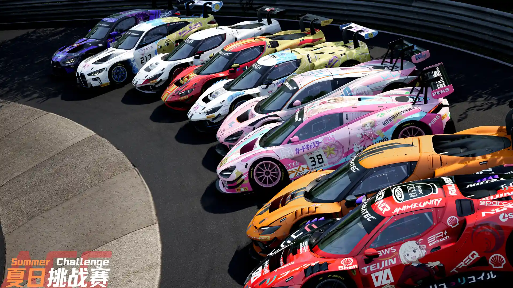
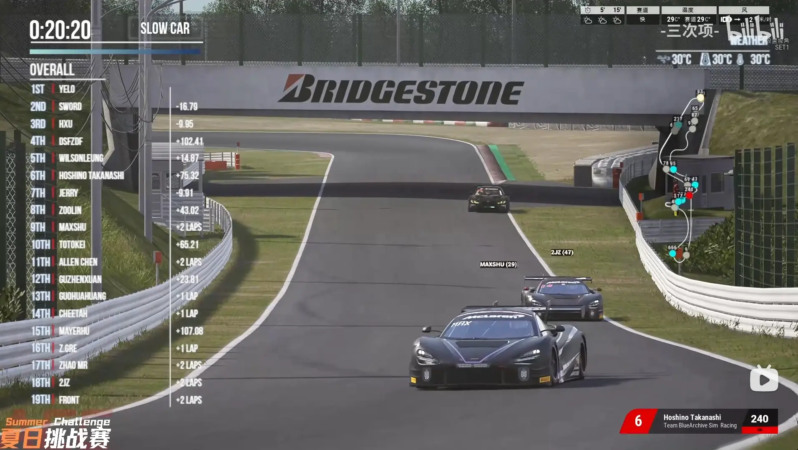
从规则的制定再到各个平台的宣发，后面还尝试了 B 站转播加解说加判罚，非常庆幸平时积累的技能恰好在此时与爱好专业对口。一路上我遇到了香港的初中小孩哥、只有半夜在线的英国华侨、白天送外卖晚上备考研的手柄大佬、B 站 up 主贾斯汀……一个源于热爱的冲动，在未曾设想的道路上，竟牵引出如此多的连接与成长。
由于《神力科莎：争锋》（ACC）是一个模拟现实物理的硬核赛车游戏，本体没有任何游戏性，甚至连官方联机服务器都没有，我的比赛服务器由自行购买的阿里云 ECS 搭建。
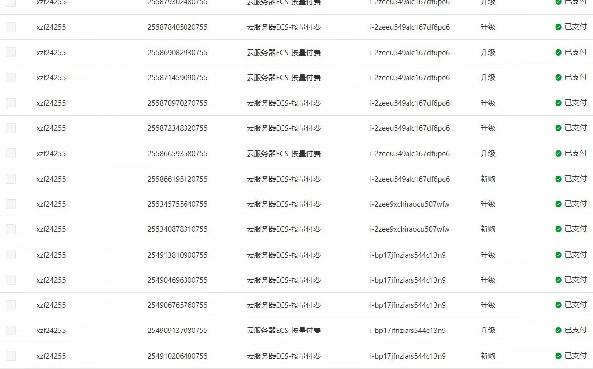
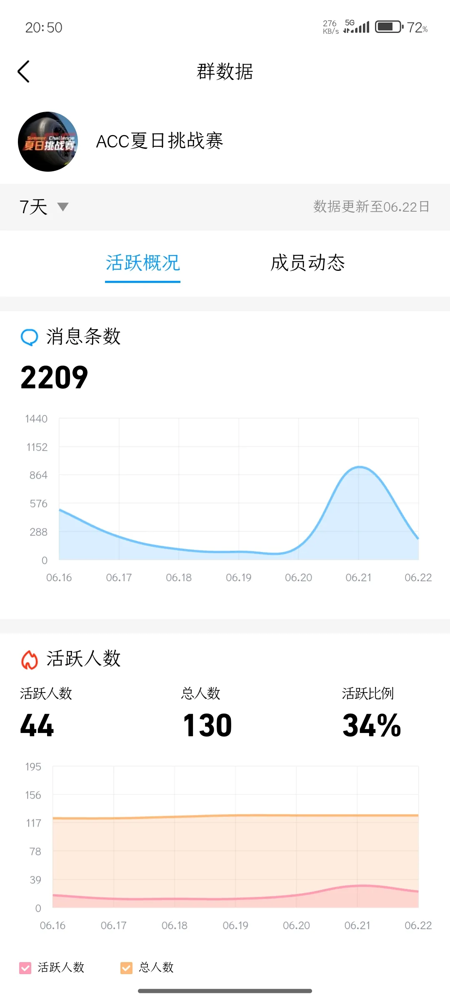
数据可视化 · F1
高中生带你认识F1
F1？也许大部分人对这项运动感到陌生。随着 2024 年中国大奖赛的回归，作为资深车迷和 B 站 up 主，我使用了一些有趣的工具将 F1 数据可视化，希望能帮助大家更了解这项运动，让 F1 文化被更多人熟知和喜爱。
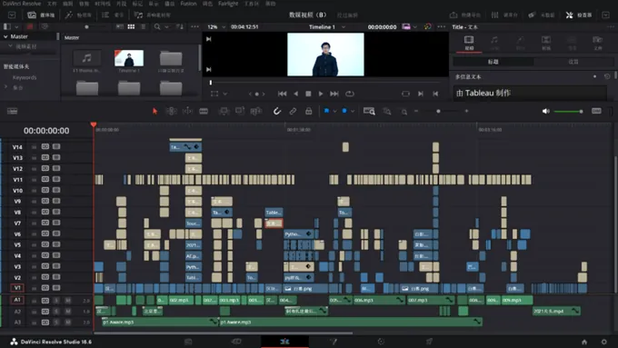
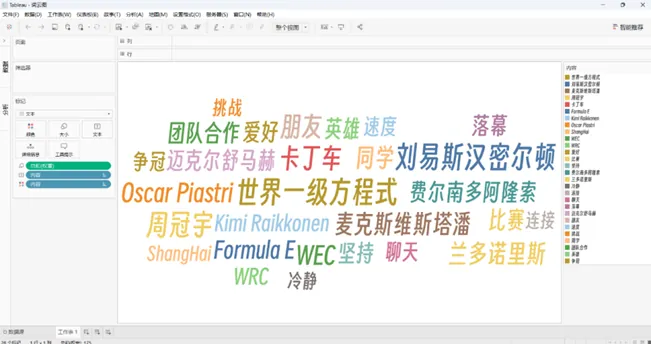
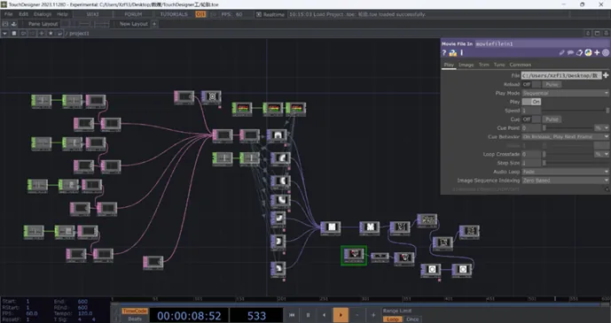
工业设计 · 概念创作
幻想成真
从初二开始，因为晚自习无聊开始在纸上画出手机外观再意淫配置，幻想了一个属于我的科技公司。以十年为跨度重复玩了好几轮。到高中后我开始用 PPT 制作，后来我用 AI 把线稿草图重绘成了渲染图，部分设计居然和两年后的 iPhone 16、红米 Turbo 3 设计高度相似。

图片为临时占位素材，后续可替换为概念手机设计稿与实机对比图。
游戏设计
小学就开始做游戏的人
我从小学开始接触游戏，立马被这种新的媒介吸引。因为喜欢，开始自发制作游戏，包括 3 部 PPT 闯关游戏和 13 部"游戏本"，在年级内获得了大量"用户"。虽然制作谈不上精良，倒是数值膨胀、后期内容复杂等网游常见问题，在我还不知道这些名词前已经体会到了开发者的感受……
图片为临时占位素材，后续可替换为 PPT 闯关游戏与游戏本实物照片。
定格动画 · 毕业典礼
乐高定格动画
在 2025 年学校毕业典礼上，我负责制作回顾、暖场和开场视频。开场视频中，我仿照中传 B 站发布的短片《时·空》，制作了《在北医普通的一天》乐高定格动画。单人制作让我体验到了定格全流程，也体验到了拍摄的痛苦与快乐。
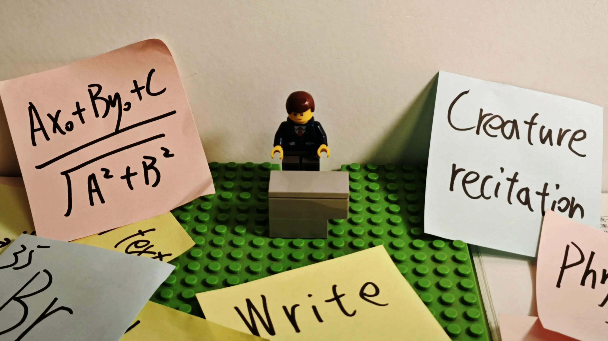
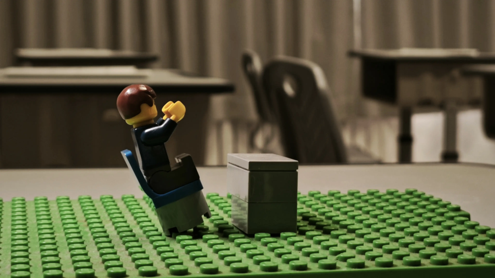
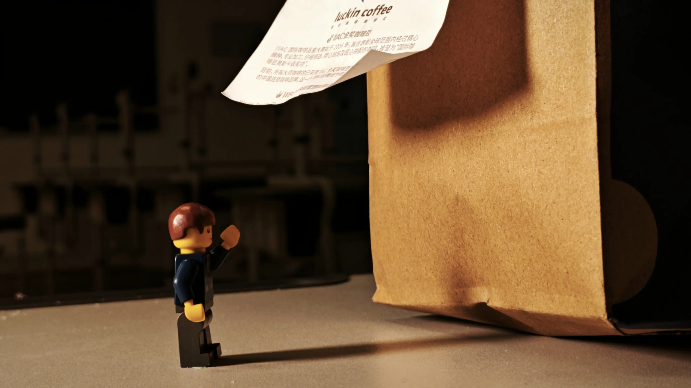
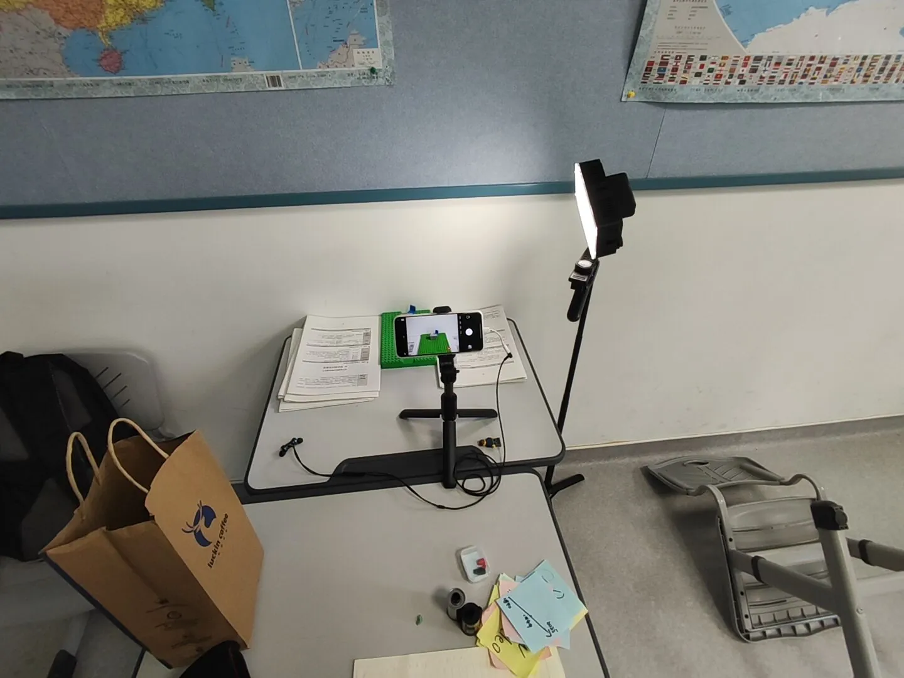
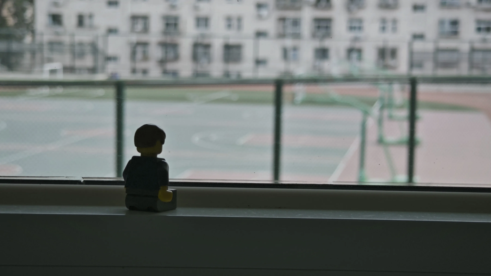

最后放映时，心脏扑通扑通跳：
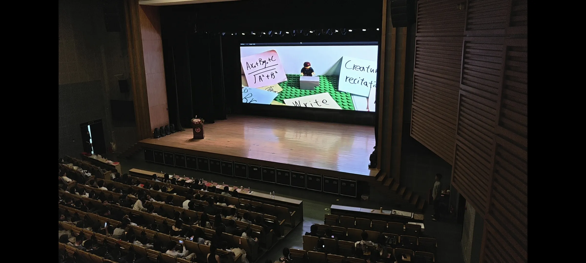
产品体验 · 闲鱼经营
闲鱼现金流体验科技产品
秉承着"买回来先加价挂闲鱼"的习惯，我靠着脆弱的现金流体验到了各种科技产品，包括 18 台手机、14 种相机、13 种胶片以及各种奇奇怪怪的产品，同时我也在销售胶片并提供冲洗服务，至今闲鱼账号总销售额达到了：6.2 万元。
部分体验产品

图片为临时占位素材，后续可替换为各产品实物照片。